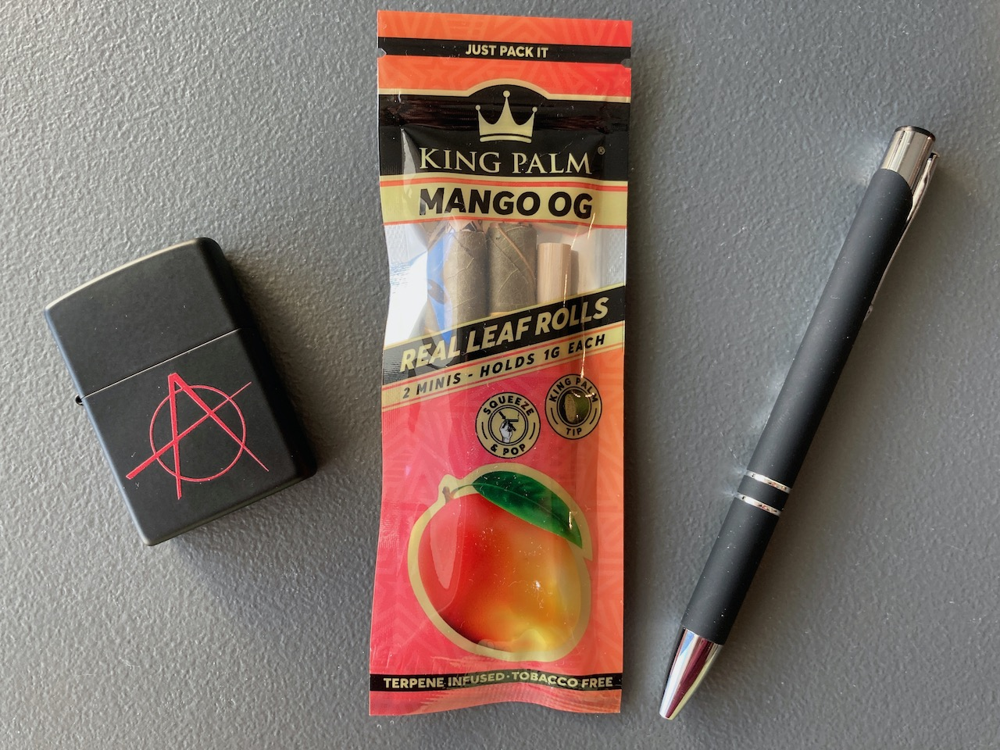
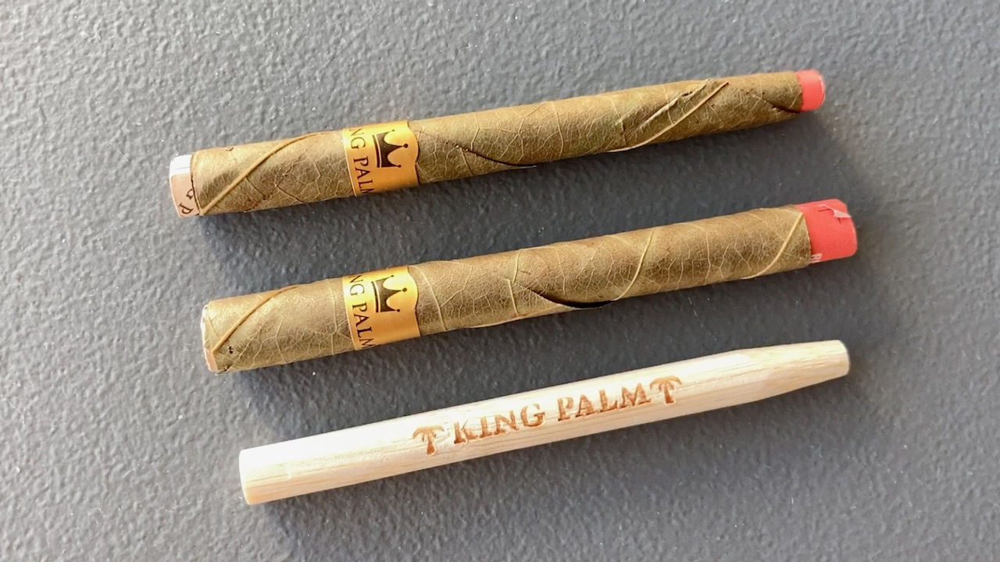
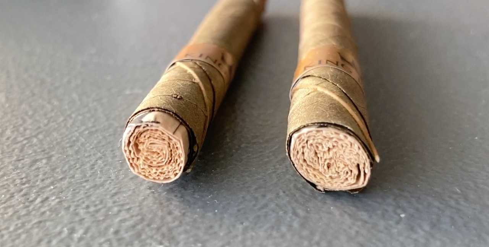
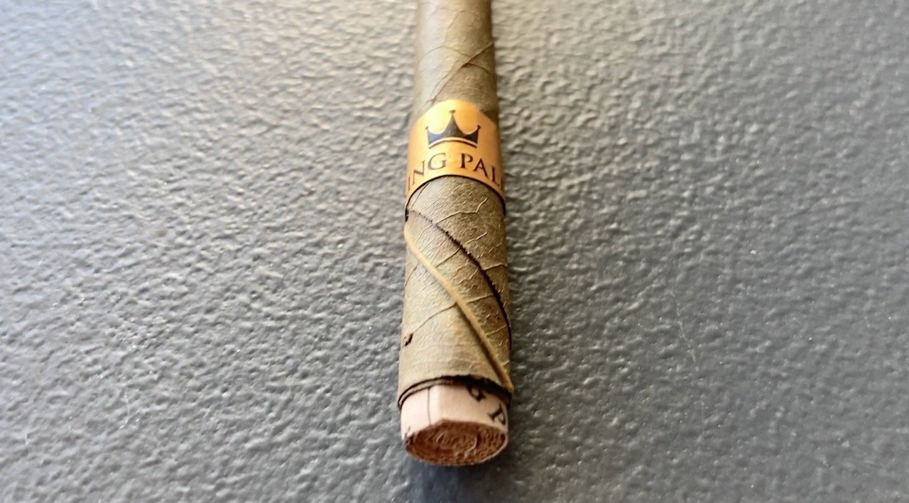
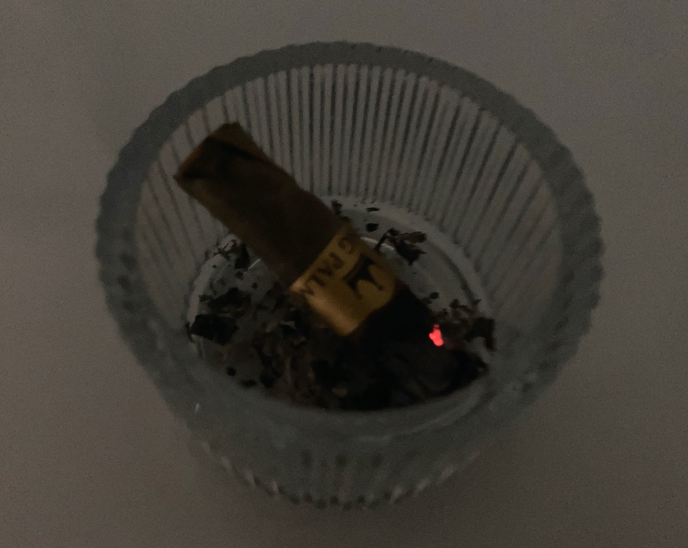
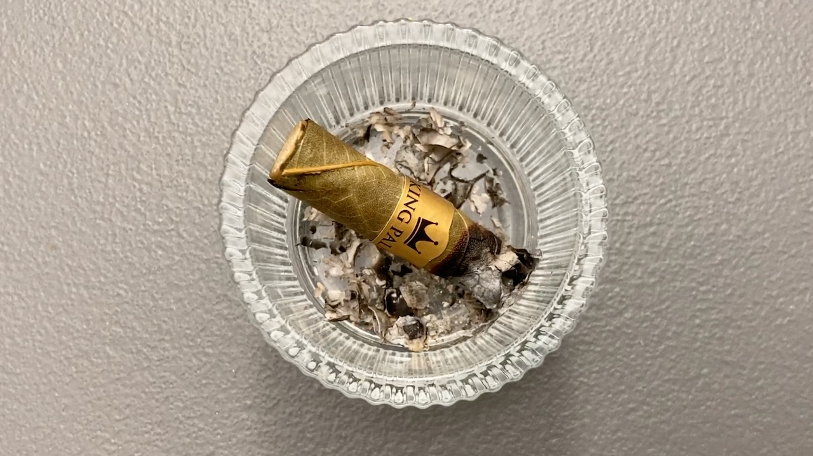
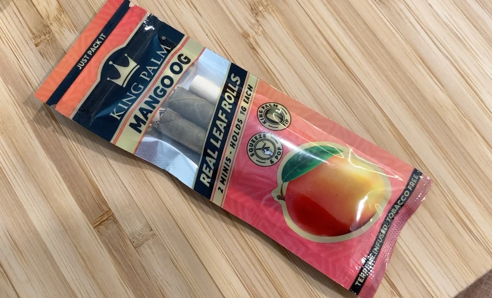

My First Ever Smoke: King Palm Mango OG
This is kind of a funny story. I have never smoked a cigarette before. I have never smoked marijuana. My first ever-and-only smoke before my first cigar (H. Upmann Half Corona) was an empty tube of Mango OG 😂

I was shopping with my boyfriend when we first saw this at a smoke shop. King Palm was placed somewhat far away so from the shelf, so my boyfriend thought it as a mango flavoured cigar. He told me about this mango flavoured cigar after we left the store, so I asked him to pick this up when he pass by the store the next time. And he did.

When he took it home a few days after, I was like, it doesn't feel like a cigar. It's way too thin. When I opened it up, it was two empty tubes and no fillings. The next step of course, was to search it up on Google. First thing that I found was he paid overprice for this thing. The second thing was that the fillings were actually for weed and this is just the wrapper... 🤦

Neither of us smoke nor know anything about weed. I personally don't find the smell of weed fascinating. My boyfriend suggested burning and smoke just the wrapper 😂. The package, after all, said it does not contain any tobacco or other addictives. So he light it up, followed the instructions and gave it a few press on the filter. And we smoked an empty tube.

We did not tasted anything mango. All my boyfriend tasted was burning paper. I smelled some light sweetness to it (probably just the leaves), but there was nothing mango about it. We were able to get a few puffs (like maybe 5 or 6 puffs each) before it went out though. It was a short smoke. Fun but no mango. 🤔

The following day, I smoked the second wrapper by myself because he didn't enjoy it. Towards the end of my smoke, I thought hey, I should give it try and squeeze the end myself. Then I heard a "POP!?????" 😳 There was the mango smell everywhere... But, I've reached the end of the smoke...

The mango smelled really sweet and it was nice, but we didn't get it right at all lol. 😅 What a waste... Then again, it wouldn't be correct anyways because I'm not interested in weed or the fillings. And there goes my first experience of remotely close to smoking anything. Not a cigarette, not weed, not vape, not cigar; It's an empty tube of King Palm with zero flavours...

By the way, we went back to that store again a few weeks after and they actually do not carry cigars... 🤣
| Where did I get it? | Hood Goods Exotic Snacks - Smoke Shop |
| Price | About CAD$6 |
| Date of Acquisition | May 24, 2023 |